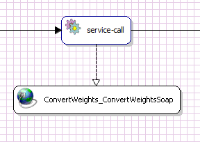

Managing session using cookies in SOAP client

Topic content
Description
Sometimes, it is necessary to manage HTTP header in SOAP Web Services, apart from default HTTP header fields that are exchanged in SOAP communication. Even though SOAP is normally stateless, some use cases require having stateful SOAP Web Services and proper handling on client side. Here we describe how to manage HTTP header fields on client - orchestra side.
Orchestra handles HTTP Header internally in a form of Map<String, List<String> where key is HTTP field name and value is a list of HTTP field values. Therefore, variables that are passed around the process model must have type any.
|
It is important to understand that we do not modify default HTTP Headers when calling Web Service, we can only add additional fields if we want. |
|
This example does not work with session since we do not have sample stateful Web Service. However, it explains management of HTTP Header fields and how to access cookies within HTTP Header. |
Problem to Solve
When we create trusted connection between client and server by performing authentication, we want to be able to perform each call with same session ID, so that we do not have to authenticate client for each call.
To achieve this behavior, we will access HTTP header that is received in SOAP Service Response and try to find session cookies in it. Since version 4.6.0.0, orchestra supports HTTP header fields management in SOAP service calls.
Step Overview
For creating Web Service client and process model with session handling, follow these steps:
1.Import WSLD in Service Client
2.Configure Web Service operation
3.Create a process models for calling the Web Service
4.Create a Java Outbound channel that will take HTTP Header and modify it
5.Design process model for session handling
Prerequisites
All necessary artifacts are shown or provided in this page. Optionally, for proper session handling you need stateful Web Service and it's WSDL.
Used Concept
We are using Service Client to import WSDL and configure HTTP Header handling. Also, process model is used to manage HTTP Header.
Steps
In this example we will use sample Web Service that actually does not have cookies or session id. What we will demonstrate is how to fetch and send additional HTTP Headers. Please refer to Service Client for details about importing WSDL.
If you do not have your own (stateful) Web service, please use following WSDL:
Example - WSDL file |
<?xml version="1.0" encoding="utf-8"?> <wsdl:definitions xmlns:tm="http://microsoft.com/wsdl/mime/textMatching/" xmlns:soapenc="http://schemas.xmlsoap.org/soap/encoding/" xmlns:mime="http://schemas.xmlsoap.org/wsdl/mime/" xmlns:tns="http://www.webserviceX.NET/" xmlns:soap="http://schemas.xmlsoap.org/wsdl/soap/" xmlns:s="http://www.w3.org/2001/XMLSchema" xmlns:soap12="http://schemas.xmlsoap.org/wsdl/soap12/" xmlns:http="http://schemas.xmlsoap.org/wsdl/http/" targetNamespace="http://www.webserviceX.NET/" xmlns:wsdl="http://schemas.xmlsoap.org/wsdl/"> <wsdl:types> <s:schema elementFormDefault="qualified" targetNamespace="http://www.webserviceX.NET/"> <s:element name="ConvertWeight"> <s:complexType> <s:sequence> <s:element minOccurs="1" maxOccurs="1" name="Weight" type="s:double" /> <s:element minOccurs="1" maxOccurs="1" name="FromUnit" type="tns:WeightUnit" /> <s:element minOccurs="1" maxOccurs="1" name="ToUnit" type="tns:WeightUnit" /> </s:sequence> </s:complexType> </s:element> <s:simpleType name="WeightUnit"> <s:restriction base="s:string"> <s:enumeration value="Grains" /> <s:enumeration value="Scruples" /> <s:enumeration value="Carats" /> <s:enumeration value="Grams" /> <s:enumeration value="Pennyweight" /> <s:enumeration value="DramAvoir" /> <s:enumeration value="DramApoth" /> <s:enumeration value="OuncesAvoir" /> <s:enumeration value="OuncesTroyApoth" /> <s:enumeration value="Poundals" /> <s:enumeration value="PoundsTroy" /> <s:enumeration value="PoundsAvoir" /> <s:enumeration value="Kilograms" /> <s:enumeration value="Stones" /> <s:enumeration value="QuarterUS" /> <s:enumeration value="Slugs" /> <s:enumeration value="weight100UScwt" /> <s:enumeration value="ShortTons" /> <s:enumeration value="MetricTonsTonne" /> <s:enumeration value="LongTons" /> </s:restriction> </s:simpleType> <s:element name="ConvertWeightResponse"> <s:complexType> <s:sequence> <s:element minOccurs="1" maxOccurs="1" name="ConvertWeightResult" type="s:double" /> </s:sequence> </s:complexType> </s:element> <s:element name="double" type="s:double" /> </s:schema> </wsdl:types> <wsdl:message name="ConvertWeightSoapIn"> <wsdl:part name="parameters" element="tns:ConvertWeight" /> </wsdl:message> <wsdl:message name="ConvertWeightSoapOut"> <wsdl:part name="parameters" element="tns:ConvertWeightResponse" /> </wsdl:message> <wsdl:message name="ConvertWeightHttpGetIn"> <wsdl:part name="Weight" type="s:string" /> <wsdl:part name="FromUnit" type="s:string" /> <wsdl:part name="ToUnit" type="s:string" /> </wsdl:message> <wsdl:message name="ConvertWeightHttpGetOut"> <wsdl:part name="Body" element="tns:double" /> </wsdl:message> <wsdl:message name="ConvertWeightHttpPostIn"> <wsdl:part name="Weight" type="s:string" /> <wsdl:part name="FromUnit" type="s:string" /> <wsdl:part name="ToUnit" type="s:string" /> </wsdl:message> <wsdl:message name="ConvertWeightHttpPostOut"> <wsdl:part name="Body" element="tns:double" /> </wsdl:message> <wsdl:portType name="ConvertWeightsSoap"> <wsdl:operation name="ConvertWeight"> <wsdl:input message="tns:ConvertWeightSoapIn" /> <wsdl:output message="tns:ConvertWeightSoapOut" /> </wsdl:operation> </wsdl:portType> <wsdl:portType name="ConvertWeightsHttpGet"> <wsdl:operation name="ConvertWeight"> <wsdl:input message="tns:ConvertWeightHttpGetIn" /> <wsdl:output message="tns:ConvertWeightHttpGetOut" /> </wsdl:operation> </wsdl:portType> <wsdl:portType name="ConvertWeightsHttpPost"> <wsdl:operation name="ConvertWeight"> <wsdl:input message="tns:ConvertWeightHttpPostIn" /> <wsdl:output message="tns:ConvertWeightHttpPostOut" /> </wsdl:operation> </wsdl:portType> <wsdl:binding name="ConvertWeightsSoap" type="tns:ConvertWeightsSoap"> <soap:binding transport="http://schemas.xmlsoap.org/soap/http" /> <wsdl:operation name="ConvertWeight"> <soap:operation soapAction="http://www.webserviceX.NET/ConvertWeight" style="document" /> <wsdl:input> <soap:body use="literal" /> </wsdl:input> <wsdl:output> <soap:body use="literal" /> </wsdl:output> </wsdl:operation> </wsdl:binding> <wsdl:binding name="ConvertWeightsSoap12" type="tns:ConvertWeightsSoap"> <soap12:binding transport="http://schemas.xmlsoap.org/soap/http" /> <wsdl:operation name="ConvertWeight"> <soap12:operation soapAction="http://www.webserviceX.NET/ConvertWeight" style="document" /> <wsdl:input> <soap12:body use="literal" /> </wsdl:input> <wsdl:output> <soap12:body use="literal" /> </wsdl:output> </wsdl:operation> </wsdl:binding> <wsdl:binding name="ConvertWeightsHttpGet" type="tns:ConvertWeightsHttpGet"> <http:binding verb="GET" /> <wsdl:operation name="ConvertWeight"> <http:operation location="/ConvertWeight" /> <wsdl:input> <http:urlEncoded /> </wsdl:input> <wsdl:output> <mime:mimeXml part="Body" /> </wsdl:output> </wsdl:operation> </wsdl:binding> <wsdl:binding name="ConvertWeightsHttpPost" type="tns:ConvertWeightsHttpPost"> <http:binding verb="POST" /> <wsdl:operation name="ConvertWeight"> <http:operation location="/ConvertWeight" /> <wsdl:input> <mime:content type="application/x-www-form-urlencoded" /> </wsdl:input> <wsdl:output> <mime:mimeXml part="Body" /> </wsdl:output> </wsdl:operation> </wsdl:binding> <wsdl:service name="ConvertWeights"> <wsdl:port name="ConvertWeightsSoap" binding="tns:ConvertWeightsSoap"> <soap:address location="http://www.webservicex.net/convertweight.asmx" /> </wsdl:port> <wsdl:port name="ConvertWeightsSoap12" binding="tns:ConvertWeightsSoap12"> <soap12:address location="http://www.webservicex.net/convertweight.asmx" /> </wsdl:port> <wsdl:port name="ConvertWeightsHttpGet" binding="tns:ConvertWeightsHttpGet"> <http:address location="http://www.webservicex.net/convertweight.asmx" /> </wsdl:port> <wsdl:port name="ConvertWeightsHttpPost" binding="tns:ConvertWeightsHttpPost"> <http:address location="http://www.webservicex.net/convertweight.asmx" /> </wsdl:port> </wsdl:service> </wsdl:definitions> |
Here we show how to enable HTTP Header management on operation level.
•In Service Client that you generated in previous step, navigate to operation specific bindings and click on method:
•On the right side, please expand first panel by clicking on arrow:
•Select both check boxes as show in picture above.
Here we create a process model that will call Web Service and manage HTTP Header response and request:
•Create new process model and name it pm_ConvertWeights. Configure two local properties (process variables) in it:

First process variable is the one that will be used for storing HTTP Header. The second one is only used for logging HTTP Header content.
In this step describes how should HTTP Header be used and how it should be modified.
•Create new Java Outbound channel and name it pm_httpHeader;
•Configure properties as shown in picture:
•Import following declarations:
Import declarations |
import java.util.ArrayList; import java.util.Arrays; import java.util.Map; import java.util.HashMap; import java.util.Iterator; import java.util.List; import java.util.Set; import emds.util.communication.HttpConstants; |
•Write following in the implementation part:
Java Outbound channel implementation |
// cast headerMap from process variable to the Map Map map = (Map) httpHeaderMap;
// create new map that will be used as a request HashMap requestMap = new HashMap();
// String used for logging that will contain all header fields from process variable headerMap String result = "\nHTTP HEADER FIELDS:\n";
Set keys = map.keySet(); Iterator keysIt = keys.iterator();
while ( keysIt.hasNext() ) { // get header field name String key = (String) keysIt.next(); result = result + "\tKEY: " + key + "\n\t\tVALUES: ";
// get header field values List values = (List) map.get( key );
// here we copy cookies from response to the request if (key != null && key.equals(HttpConstants.HTTP_RESPONSE_HEADER_COOKIE_FIELD)) { requestMap.put(HttpConstants.HTTP_REQUEST_HEADER_COOKIE_FIELD, values); }
// get values for logging Iterator valuesIt = values.iterator(); String valuesString = ""; while (valuesIt.hasNext()) { String value = (String) valuesIt.next(); valuesString = valuesString + " ["+ value + "] " ; } result = result + valuesString + "\n"; }
// formatedString for logging formatedString = result; // headerMap that can be used as a request later in process model ch_httpHeaderRequest = requestMap; |
Here we use constants for getting and setting HTTP Headers fields. All field names constants are same as HTTP fields. Have a look here: https://en.wikipedia.org/wiki/List_of_HTTP_header_fields.
Similar Java Outbound channel you will need for your HTTP field handling.
•Save changes
Your process model should look like this one:
•First service call simply calls Web Service without providing HTTP Header.

This call only needs request message CURMSG that can be provided when testing process model:
Import declarations |
<?xml version="1.0" encoding="ISO-8859-1" standalone="no"?> <ConvertWeight xmlns="http://www.webserviceX.NET/" xmlns:typens="http://www.webserviceX.NET/" xmlns:xsd="http://www.w3.org/2001/XMLSchema"> <Weight>50</Weight> <FromUnit>Kilograms</FromUnit> <ToUnit>PoundsTroy</ToUnit> </ConvertWeight>
|
Input parameters:
Output parameters - here we assign soap_httpHeader to process variable pmHttpHeader - it represents HTTP Header response object:
•Java Outbound channel call will provide pmHttpHeader Java Outbound channel:
Where input parameters are:
And output parameters:
Here you can see that we are using modifying process variable with the value returned from Java Outbound channel - now pmHttpHeader represents HTTP Header request object.
•Log activity is used only to verify the content of HTTP Header request and it's input assignment look like:
•Second service call calls same Web Service and provides HTTP Header fields in request:
Where input parameters are:
Output parameters are not of the interest any more.
Summary
Example that we showed here will give this kind of result in log output when process model is tested:
HTTP Header log output |
HTTP HEADER FIELDS: KEY: null VALUES: [HTTP/1.1 200 OK] KEY: Server VALUES: [Microsoft-IIS/7.0] KEY: Cache-Control VALUES: [private, max-age=0] KEY: X-AspNet-Version VALUES: [4.0.30319] KEY: Content-Length VALUES: [390] KEY: Date VALUES: [Fri, 13 Jan 2017 12:30:17 GMT] KEY: X-Powered-By VALUES: [ASP.NET] KEY: Content-Type VALUES: [text/xml; charset=utf-8] |
As you can see, there is no Cookie (Set-Cookie) field. Therefore, our process model will not send any additional HTTP Header field in the second call:
HTTP Header handling that we showed here is useful for cookie and session handling. However, as you might have noticed, it is completely flexible for any other HTTP Header manipulation, since it works on the Map level with key - values pairs.